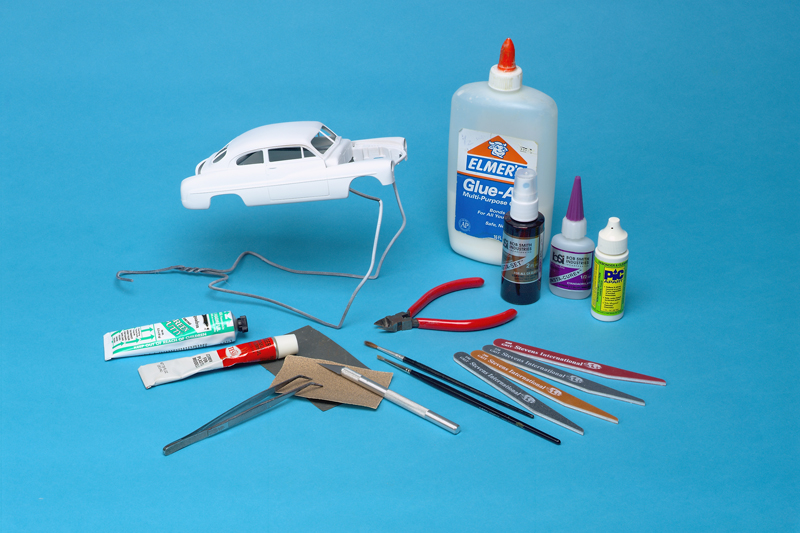
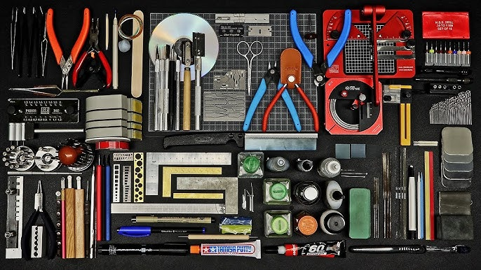

Kits
Many model kits are sold in terms of scale. Usually scaled down versions of real-life elements or fictional. You can find a model of almost anything out on the web today. Many scale models are usually wood, plastic or resin and are designed for all types of skill levels!
Tools
A multitude of hand tools are required in the process of building scale models. There are many steps in the process that each require their own equipment. Such as assembly, painting, weathering, and small details in between!
Community

Many scale modelers are involved in different communities. Scale modeling can be a hobby or as big as a competition. Some modelers even sell their creations or do consignment work. The possibilities with the hobby are limitless depending on the intent of the artist.